Further reading
https://www.pexels.com/photo/white-teddy-bear-reading-book-33196/Further reading
- "Beyond Git" (by Paweł Świątkowski)
http://katafrakt.me/2017/05/27/beyond-git/ - "Merging, patches and Pijul" (by Joe Neeman)
https://jneem.github.io/pijul/ - "The Pijul Manual"
https://pijul.org/manual/introduction.html
Any questions?
https://www.pexels.com/photo/monopoly-car-piece-1634213/Thank you! ☺️
|  | http://bit.do/git-talk-vdathens |
|  | https://hannotify.github.io |
| @hannotify | |
| hanno.embregts@infosupport.com |